Sobre mí
Hola, mi nombre es Alexandra Sánchez Valeriano y esta es mi página personal donde comparto información sobre mi familia, gustos y pasatiempos.
Lo que me motiva en la vida es el aprendizaje constante y la posibilidad de mejorar siempre. Ya sea a través de las experiencias personales, ya sean buenas o malas, ambas ayudan mucho (aunque siento que han sido más las malas experiencias las que me han forjado a lo que soy ahora), o simplemente en mi día a día, siempre intento encontrar una forma de seguir creciendo.
Disfruto de leer, escribir, dibujar y escuchar música.
Soy alguien a la que le encanta estar la mayor parte del tiempo sola, en parte siento que es un gran defecto, ya que me impide relacionarme con más gente, ya sea por que no tengo temas de conversación, o simplemente es mucha presión social para mí.
Mi Banda Favorita: ALI
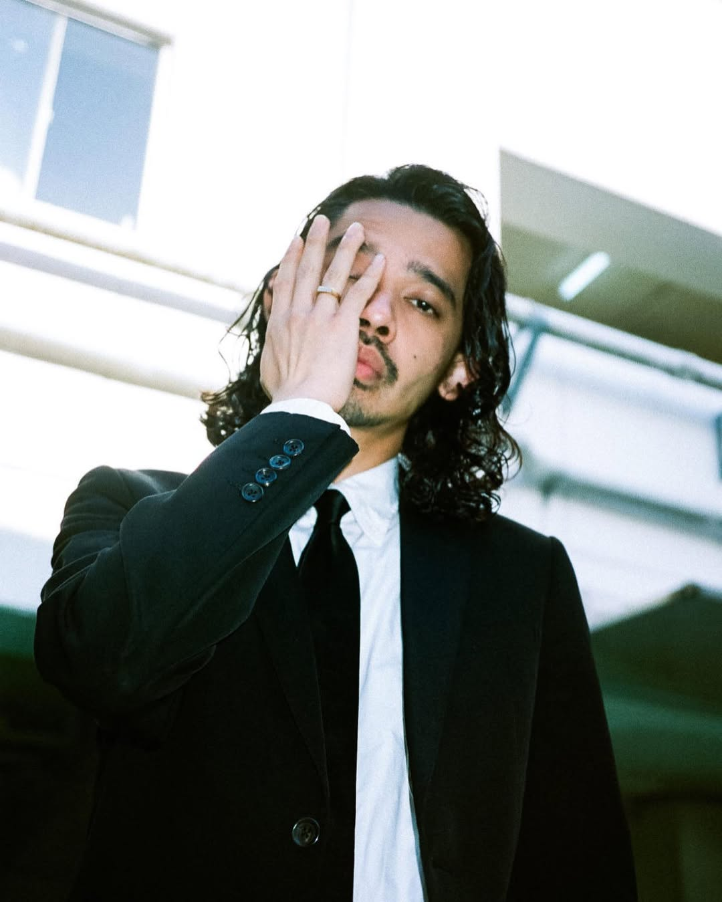
Leo Imamura
Nacimiento: 27 de enero de 1987 (39 años).
Herencia: Japonesa, Española, Inglesa y Filipina.
Vida: Criado en Shibuya, Tokio. Lidera ALI con una visión multicultural, fusionando sonidos globales para crear música sin fronteras geográficas.
La Crónica de un Colectivo Multicultural
ALI (Alien Liberty International) nació in 2016 en Shibuya, Tokio, bajo el liderazgo del vocalista Leo Imamura. Se presentaron al mundo no solo como una banda, sino como un colectivo multicultural con raíces en Japón, Europa, América y África, fusionando géneros como el Funk, Soul, Jazz y Hip-Hop.
La Era del Colectivo (2016 - 2020)
Durante sus años dorados, el grupo era numeroso e incluía a músicos destacados como Jua (Rapero), Zeru (Guitarrista), Yu Hagiwara (Saxofonista) y Jin Inoue (Tecladista). Lograron el reconocimiento mundial gracias a su estilo vibrante y multicultural.
Crunchyroll Anime Awards 2021
En un acontecimiento casi imposible en la industria, ALI ganó simultáneamente dos categorías principales en los Crunchyroll Anime Awards el mismo año: Mejor Opening por "Wild Side" (Beastars) y Mejor Ending por "Lost in Paradise" (Jujutsu Kaisen).
La Primera Gran Fractura (2021)
En mayo de 2021, la banda sufrió un golpe crítico tras el arresto del baterista Kahadio debido a un escándalo de fraude bancario. Este suceso forzó su expulsión inmediata, provocó un hiatus indefinido y la cancelación de temas importantes como el ending de The World Ends with You.
Participación Total en Anime
- Beastars (2019): Opening 1 - "Wild Side"
- Jujutsu Kaisen (2020): Ending 1 - "Lost in Paradise" feat. AKLO
- The World Ends with You (2021): Opening - "Teenage City Riot" (Retirado)
- The Fable (2024): Opening - "Professionalism"
- The Fable (2024): Ending - "Beyond"
- Dr. STONE: Science Future (2025): Opening - "Casanova Posse"
- Witch Watch: Uron Mirage (2025): Ending - "Flashback Syndrome"
La Disolución Final y el Proyecto Solista (2024 - 2025)
Tras regresar del hiatus y perder a integrantes como Alexander Taiyo Fidel, el grupo continuó como trío. Sin embargo, en octubre de 2024, el bajista Luthfi y el guitarrista César dejaron el grupo por diferencias creativas. A partir de entonces, ALI dejó de ser una banda para convertirse formalmente en el proyecto solista de LEO.
--- Mi Top 5 Tier List de Canciones (Haz clic para escuchar) ---
1. DAZE N SUNSHINE
Lanzamiento: 2021
2. NO TOMORROW
Lanzamiento: 2019
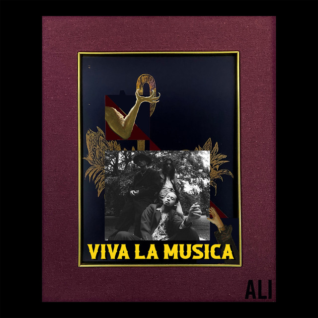
3. FEVER
Lanzamiento: 2023
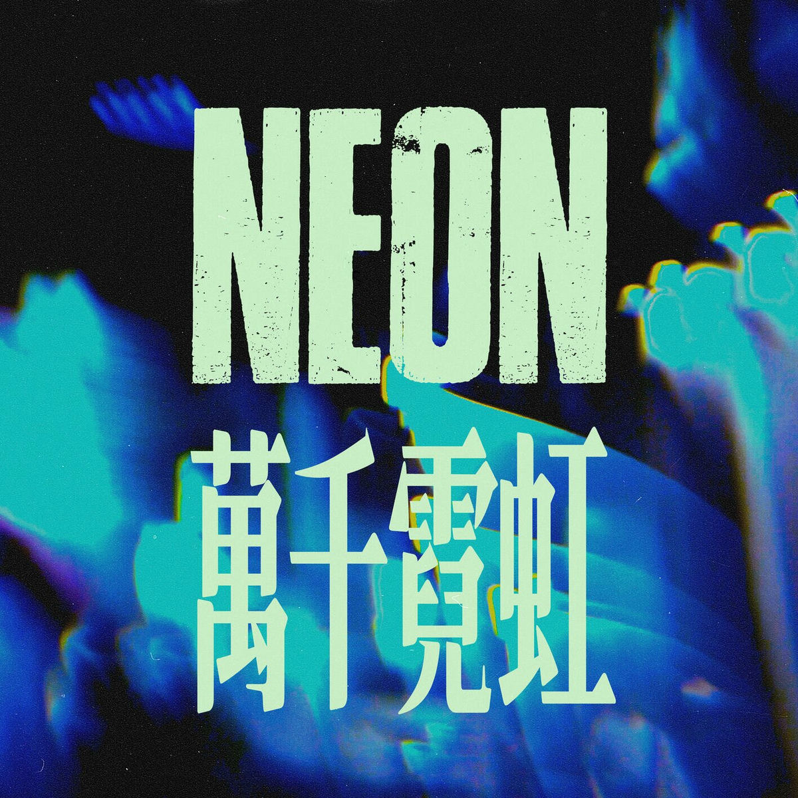
4. NEON
Lanzamiento: 2024
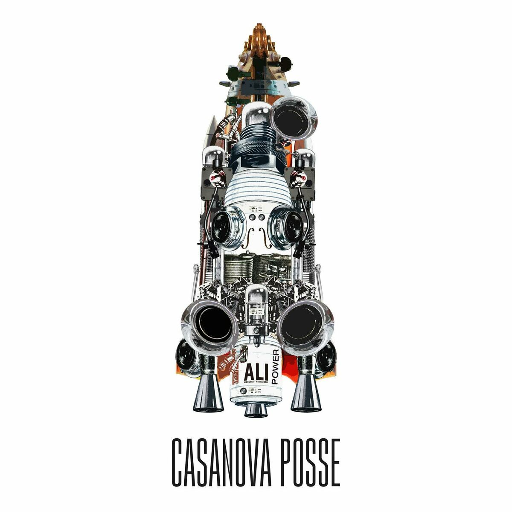
5. CASANOVA POSSE
Opening Dr. STONE (2025)
Música con Alma
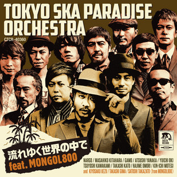
流れゆく世界の中で
La mejor canción.
Hay una canción en especial que me gusta mucho y a la cual le tengo gran aprecio; me apareció por el 2021, en aquellos momentos estaba pasando por una pérdida de un familiar, el cual no podía superar.
Al escucharla y analizar la letra, me hizo darme cuenta que a pesar de las pérdidas, siempre hay que atesorar los mejores momentos con esa persona y no soltarlos, por que aún en medio del devenir del mundo, esos recuerdos son los que te dan ese impulso a continuar.
Top 5 Manga Thriller
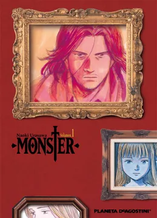
1. Monster
De Naoki Urasawa. Un neurocirujano salva a un niño que resulta ser un monstruo psicópata. Debe perseguirlo por toda Alemania para redimirse de su "error" ético en una narrativa llena de dilemas morales y suspenso psicológico profundo.
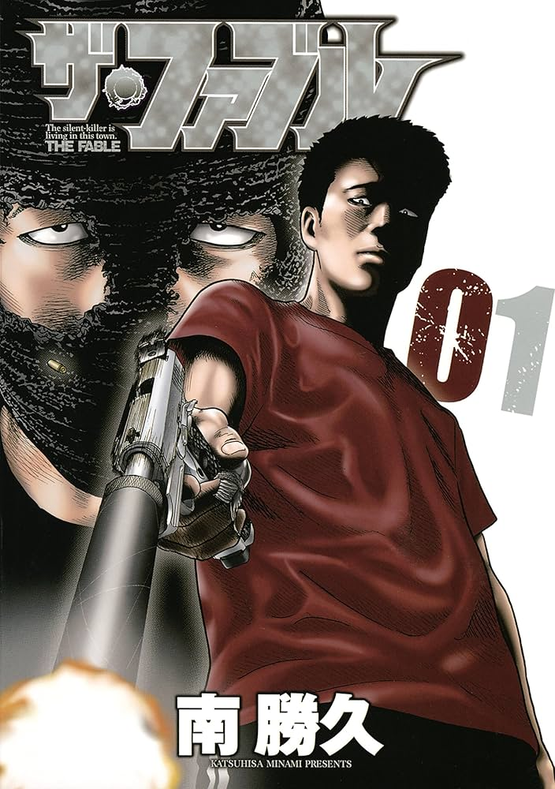
2. The Fable
De Katsuhisa Minami. El asesino más letal de Japón debe vivir como civil normal durante un año sin matar a nadie. El contraste entre su instinto asesino y la vida mundana crea una tensión constante y momentos de humor negro únicos.
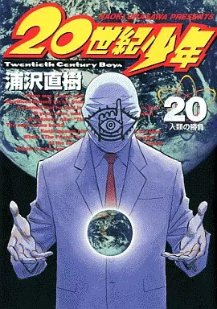
3. 20th Century Boys
Misterio épico sobre un grupo de amigos que intentan detener una conspiración mundial liderada por un misterioso "Amigo", quien está usando los planes que ellos mismos inventaron de niños para destruir el mundo.
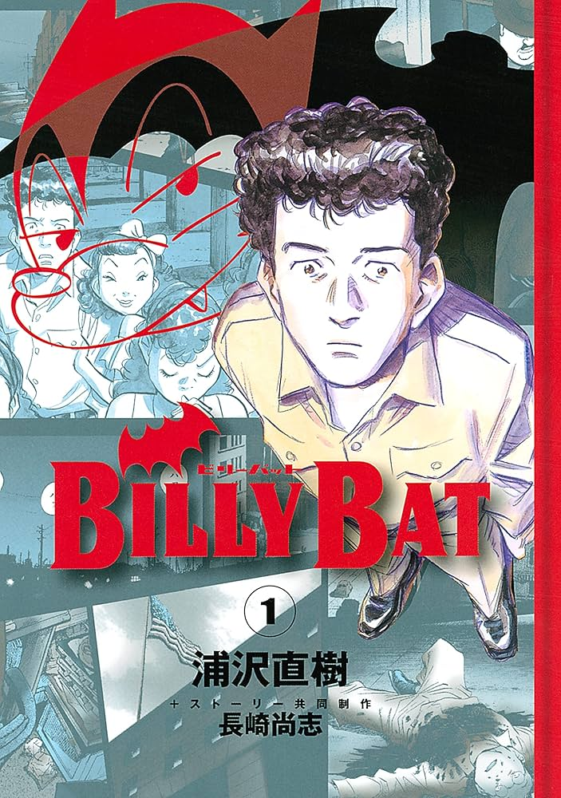
4. Billy Bat
Otra obra maestra de Urasawa. Mezcla historia real con ficción conspirativa siguiendo a un dibujante de cómics que descubre que su personaje, Billy Bat, parece influir en los grandes eventos de la historia de la historia de la humanidad.
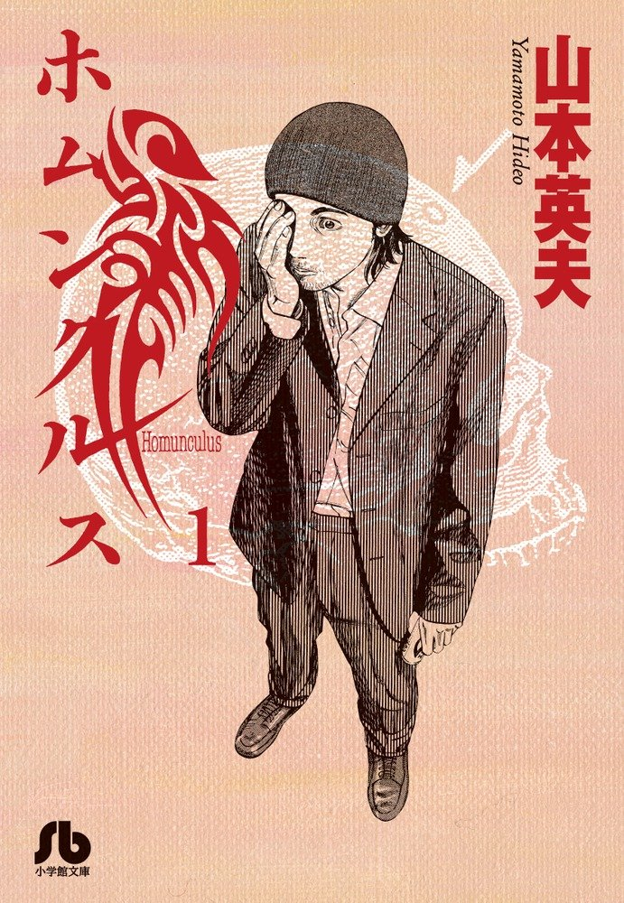
5. Homunculus
Un thriller psicológico perturbador sobre un hombre que se somete a una trepanación para despertar un sexto sentido, permitiéndole ver los traumas internos de las personas proyectados como formas grotescas.
Top 5 Anime Thriller
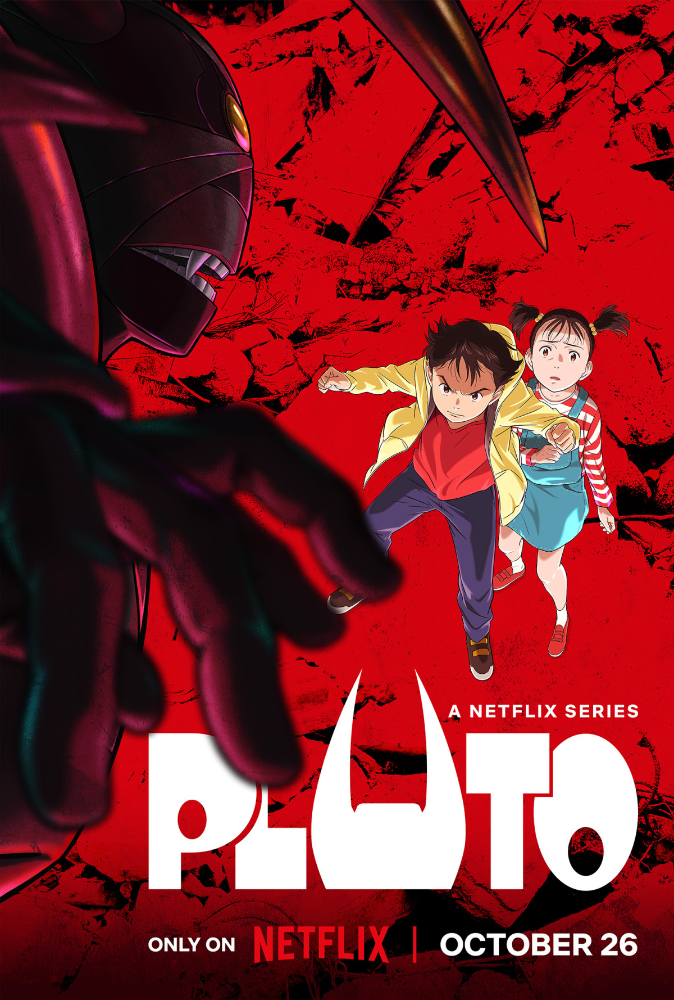
1. Pluto
Basado en Astro Boy. En un futuro donde humanos y robots conviven, un detective investiga los asesinatos sistemáticos de los siete robots más poderosos del mundo, desentrañando una red de odio y humanidad artificial.

2. Death Note
El duelo intelectual definitivo entre Light Yagami y L. Un estudiante encuentra un cuaderno capaz de matar a cualquier persona cuyo nombre sea escrito en él, iniciando una guerra psicológica global por el control del mundo.
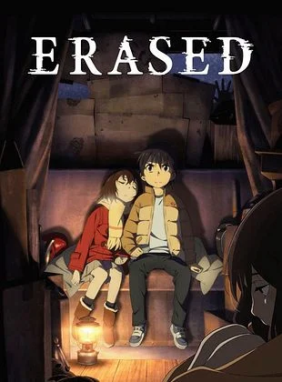
3. Erased
Satoru Fujinuma tiene el poder de retroceder en el tiempo para evitar tragedias. Tras ser acusado de asesinato, viaja 18 años atrás para detener una serie de secuestros que conectan su pasado con su presente catastrófico.
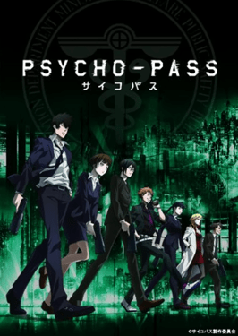
4. Psycho-Pass
En una sociedad distópica donde el estado mental de una persona determina su criminalidad potencial (Psycho-Pass), un equipo de detectives cuestiona la moralidad de un sistema que juzga antes de que se cometa el crimen.
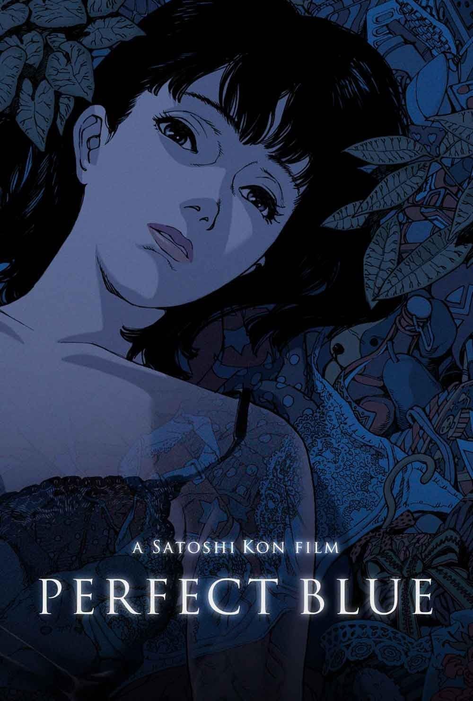
5. Perfect Blue
Una obra maestra de Satoshi Kon. Una cantante de pop decide convertirse en actriz, pero comienza a perder la noción de la realidad mientras es acosada por un fan obsesivo y su propia identidad se fragmenta.
Mi Familia y mis "Hijos"
Vivo con mi familia, la cual está conformada por mis padres, dos hermanas (siendo yo la mayor de las tres) y mis dos gatitos.
Yo antes creía que nunca tendría "hijos", pero tengo estas dos bendiciones a las cuales quiero mucho. Han hecho de mi vida una aventura muy divertida y plena, y sobre todo, me han ayudado a ser una persona un poco más sensible.
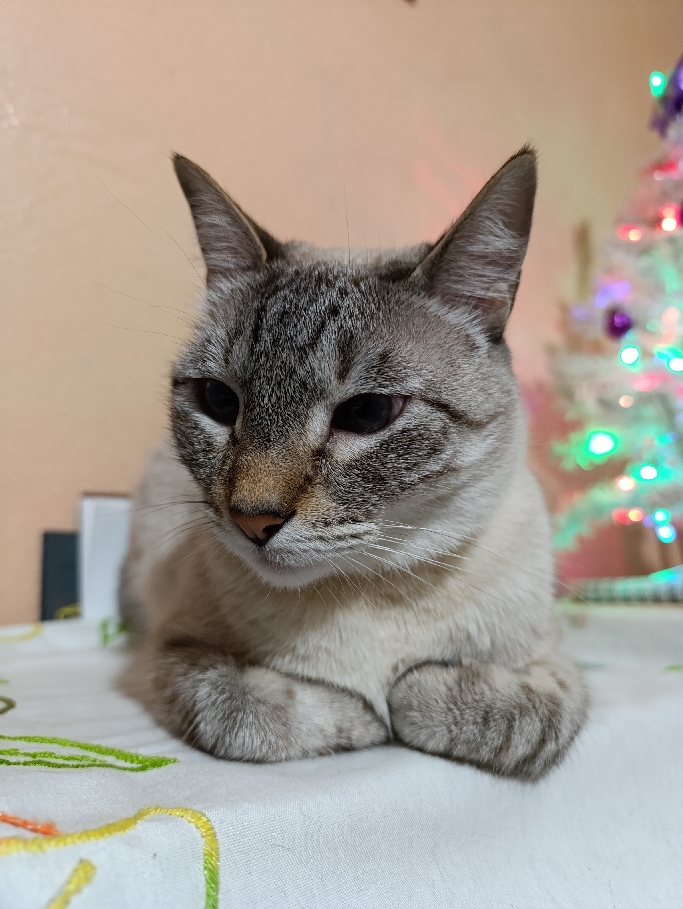
Michi (5 años conmigo)
"Michi con cara de odio."
Es la más huraña de los dos; se deja querer solo cuando ella quiere y no permite que nadie ajeno la toque. Está maullando por atención en cuanto nota nuestra ausencia. Es sumamente juguetona, aunque su juego favorito es tirar cualquier cosa que encuentre sobre las mesas. Además, de vez en cuando le da por morder los dedos de los pies de la gente.

Milaneso (1 año conmigo)
"Milaneso fotogénico."
Es todo lo contrario a Michi: es extremadamente cariñoso y siempre está detrás de ti como una sombra. Su único "defecto" es que come como si no hubiera un mañana; está muy redondo de tanto comer. A diferencia de Michi, él nos ve como figuras paternas y se siente tan cómodo con nosotros que ha agarrado la costumbre especial de dormir sobre mi cabeza.
Mis Pasatiempos
Comidas Favoritas
1. Enchiladas
2. Pizzas
3. Sushi
4. Tacos
"La comida es felicidad compartida."